Bài 1: Máy tính và các thiết bị ngoại vi
Mở ứng dụng Finder
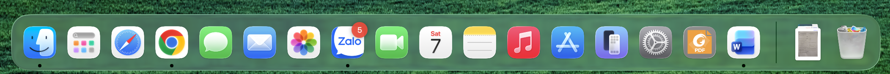
Vào Documents, nhấp chuột phải chọn tạo Folder mới
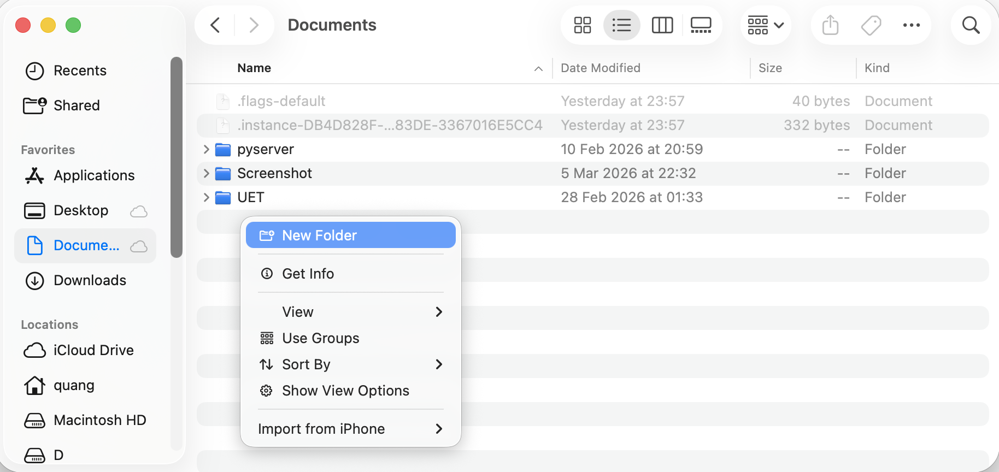
Đổi tên thư mục
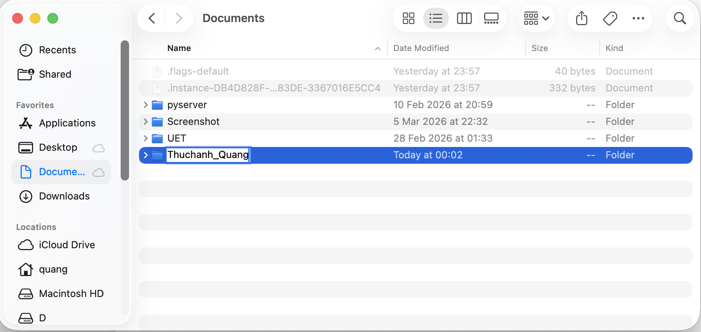
Do Macos không có tạo file txt trực tiếp nên mở app Textedit để tạo file txt. Ở đây tạo file mới và lưu ở thư mục vừa tạo ở trên. Đổi tên file thành Ghichu
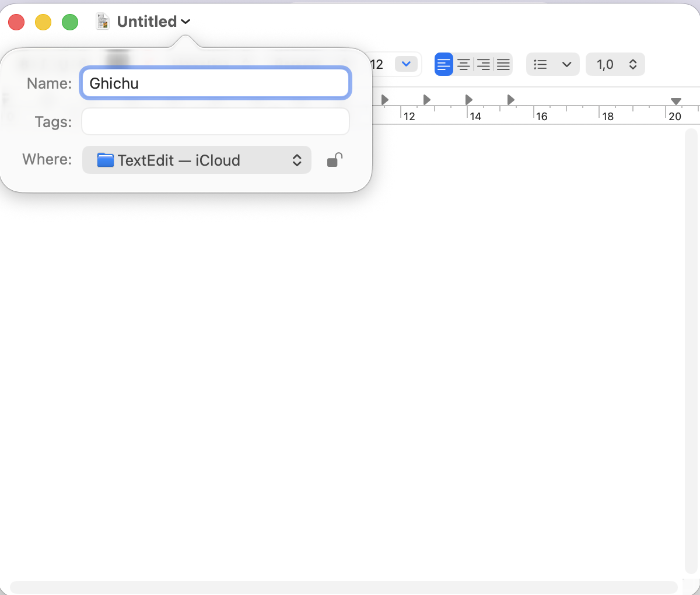
Ở folder thuchanh_Quang, đổi tên file txt vừa tạo thành Ghichuquantrong
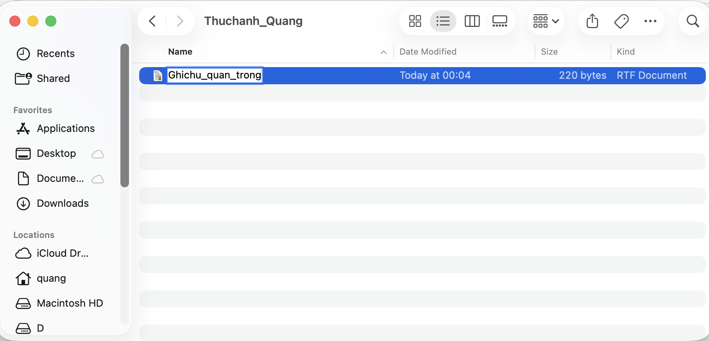
Trong folder trên, tạo thêm một folder con tên là “Tài liệu”.
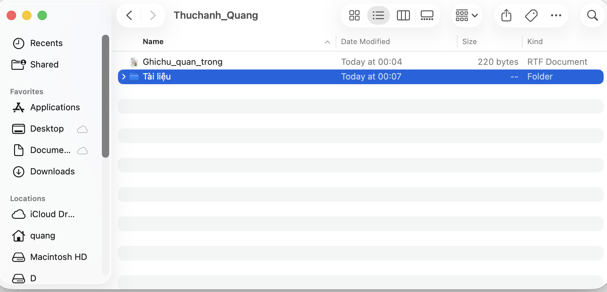
Copy file txt trên bằng cách nhấp chuột phải chọn Copy hoặc tổ hợp phím Command (⌘) + C
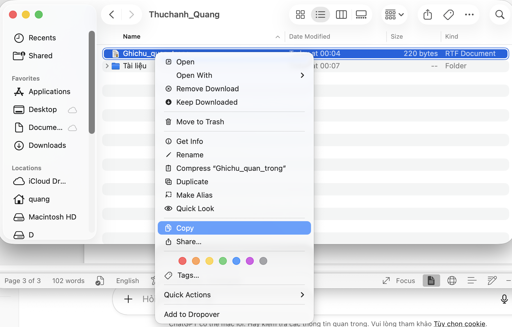
Sau đó vào thư mục con Tài liệu để dán file vừa copy, để dán file ta nhấp chuột phải chọn dán hoặc tổ hợp phím Command (⌘) + V
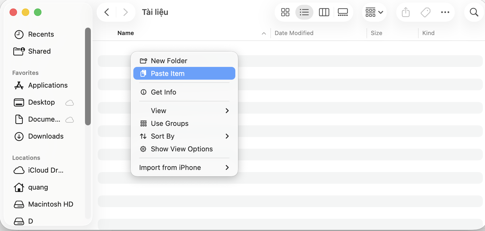
Để xoá file tạm thời, ta nhấp chuột phải chọn Move to Trash
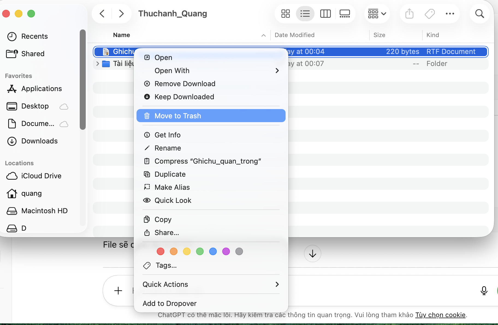
Để xoá file vĩnh viễn, ta vào Trash, nhấp chuột phải vào file cần xoá, chọn Delete Immediately
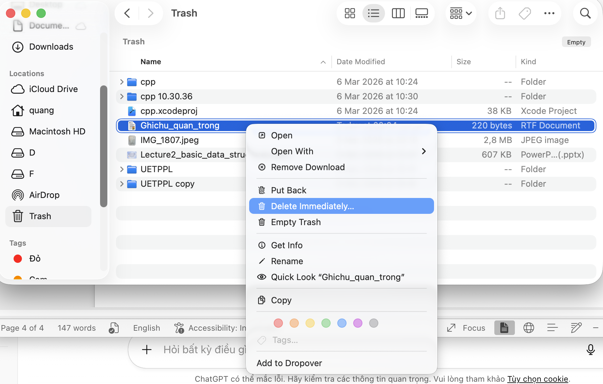
Để đưa file trở lại thư mục, ta vào trash, nhấp chuột phải chọn Put back
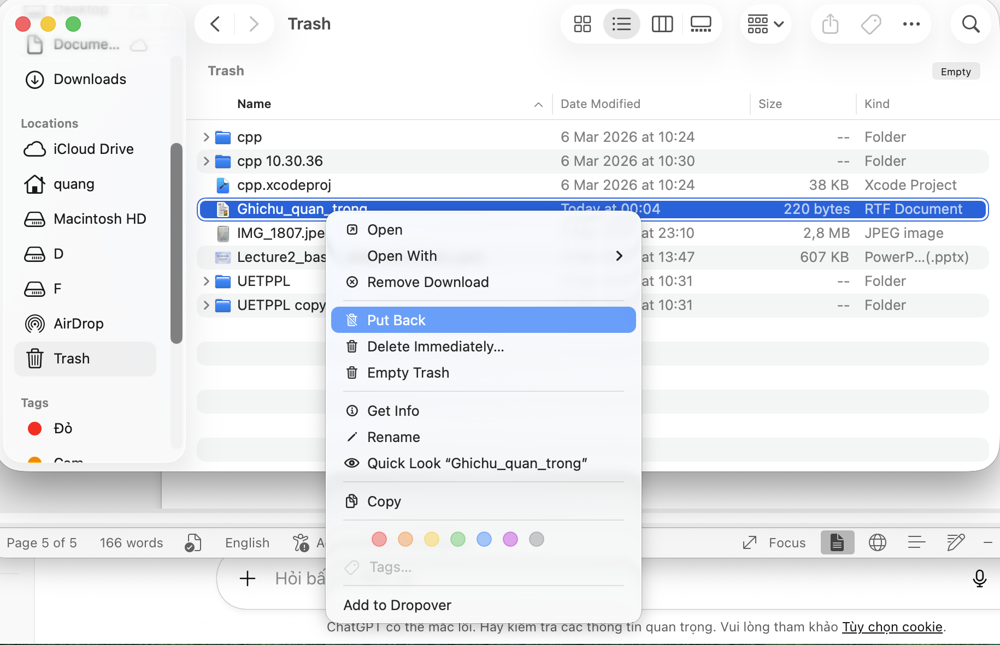